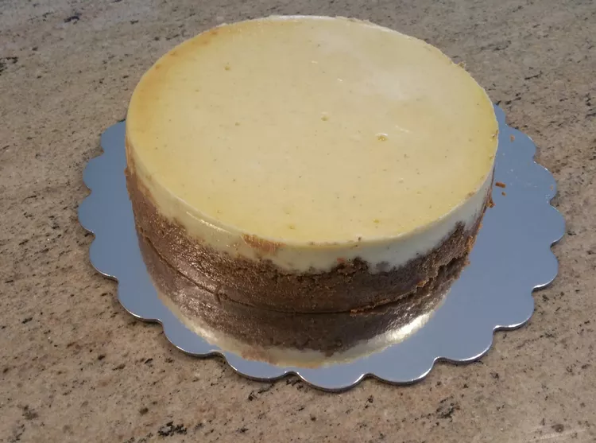

Classic New York Cheesecake

Description
This recipe will teach you how to create, what is in my opinion, the most delicious and classic dessert: The Classic New York Cheesecake.
Ingredients
Crust
- 19 Graham Crackers, crushed
- 1/4 cup white sugar
- 4 TBS unsalted butter, melted
Cheesecake
- 4 8oz packages of cream cheese, cut into cubes, at room temperature
- 1 1/2 cups white sugar
- 4 jumbo eggs, at room temperature
- 1 cup sour cream
- 1/4 cup heavy cream
- 1 TBS pure vanilla extract
- 1/8 cup all purpose flour, sifted
Directions
- Preheat the oven to 350 degrees F (175 degrees C). Fill a large, round, disposable aluminum pan with about 1/2 inch of water to create a water bath.
- Combine graham cracker crumbs, sugar, and melted butter for crust in a bowl. Mix until well combined and spread evenly in a 9-inch springform pan. Press down firmly on crumbs with a small, flat-bottom bowl or glass, all over the bottom and about 1/2 inch up the sides of the pan.
- Bake crust in the preheated oven until set, about 10 minutes. Remove crust and set aside to cool. Reduce oven temperature to 325 degrees F (165 degrees C).
- Meanwhile, mix cream cheese in a large bowl with an electric mixer until smooth. Add sugar and mix well. Add eggs, one at a time, beating batter briefly after each addition. Continue to add ingredients, one at a time, beating after each addition until blended, in this order: sour cream, heavy cream, vanilla extract, and flour. Pour cheesecake batter onto the crust and place carefully into the prepared water bath. The water level should be about 3/4 of the height of the springform pan; adjust as necessary.
- Bake cheesecake until the sides appear solid and the center appears just undercooked, about 1 hour and 30 minutes. Turn the oven off, but do not open the oven door. Let the cheesecake cool in the water bath for 3 to 4 hours; the center will continue to cook slowly.
- Open the oven door slightly and keep the cheesecake inside for 1 more hour. Remove from the oven and transfer the cheesecake from the water bath to a wire rack. Cool for 1 hour, then place in the refrigerator until firm and fully chilled, at least 6 hours.
- Run a thin metal knife along the sides of the springform pan, then unlock the pan and slip the side section up and over the cheesecake. Run a knife under hot water, dry it quickly, then slide it from left to right between the bottom of the pan and the bottom of the cake. Slide the cake to a cake liner or platter.